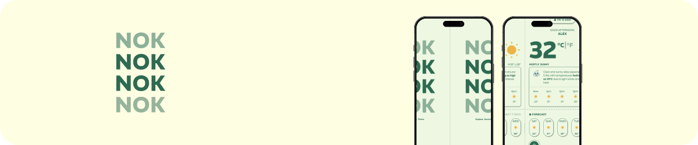
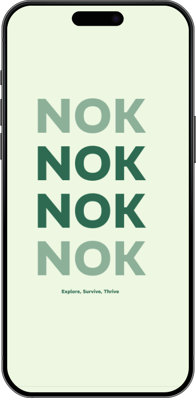
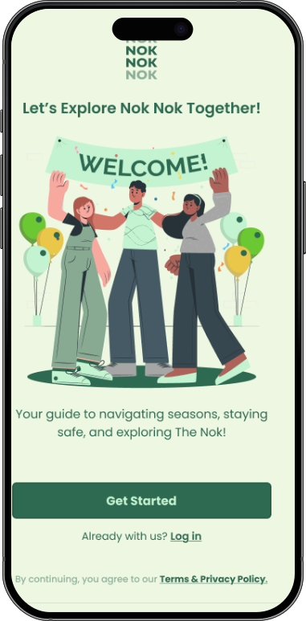
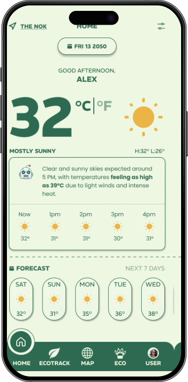

Mobile App Design
NOK NOK Weather App
A modern weather application that combines beautiful animations with real-time weather data to create an engaging and informative user experience.

Role
UI/UX Designer
Timeline
8 weeks
Tools
Figma, Principle
Design Process
01
User Research
Analyzed user behavior and needs in weather apps to identify key features and pain points.
02
UI Design
Created a clean interface with intuitive weather visualizations and smooth transitions.
03
Animation
Designed engaging weather animations to enhance the user experience and data visualization.
04
Prototyping
Built interactive prototypes to test user flows and weather state transitions.
Project Gallery


